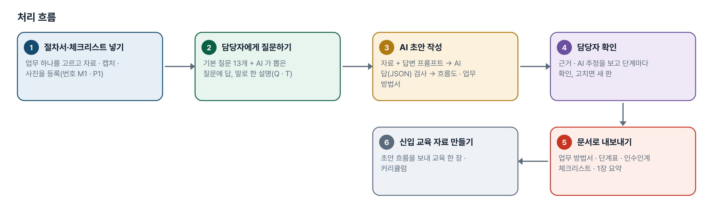
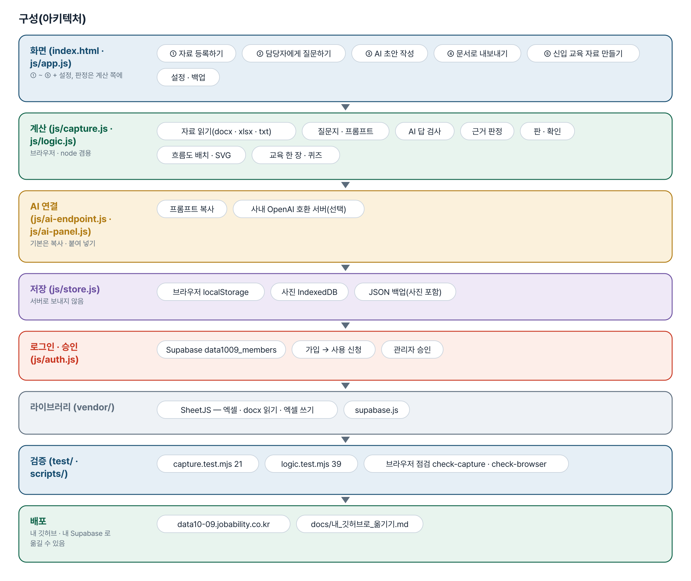
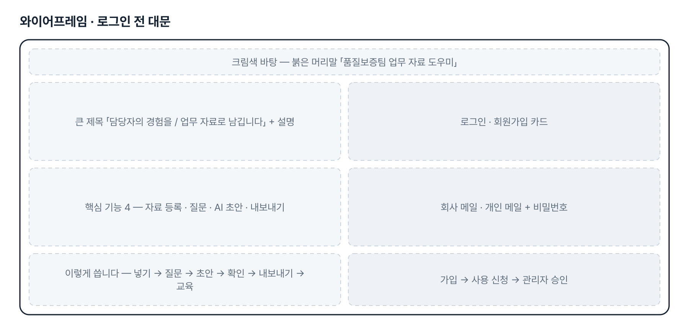
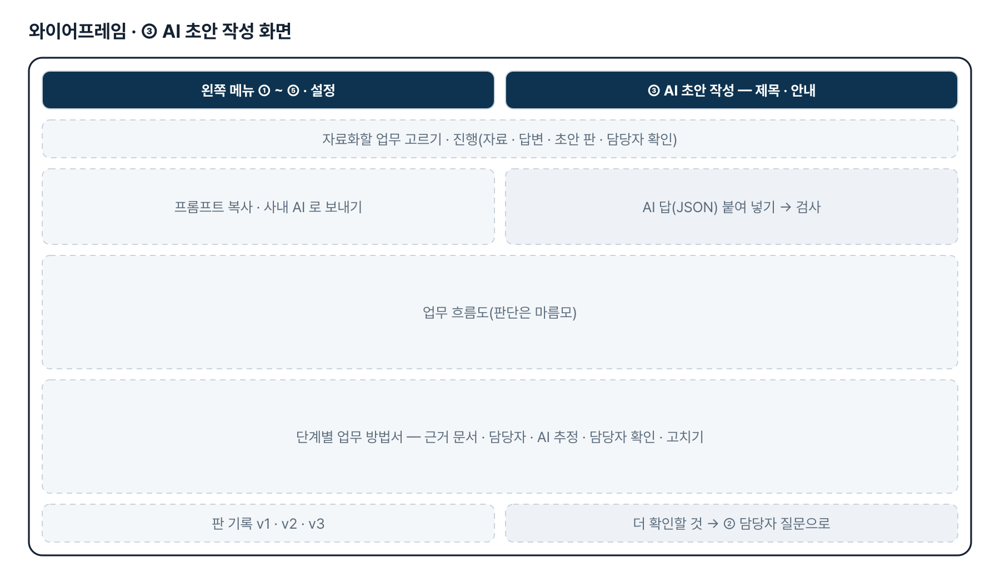
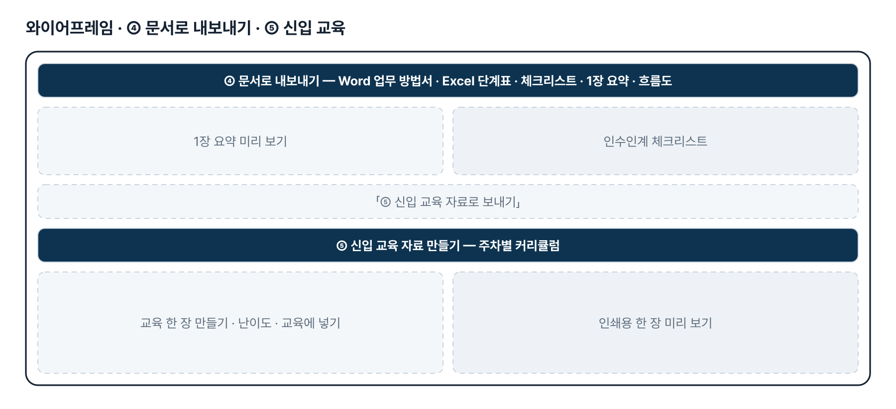
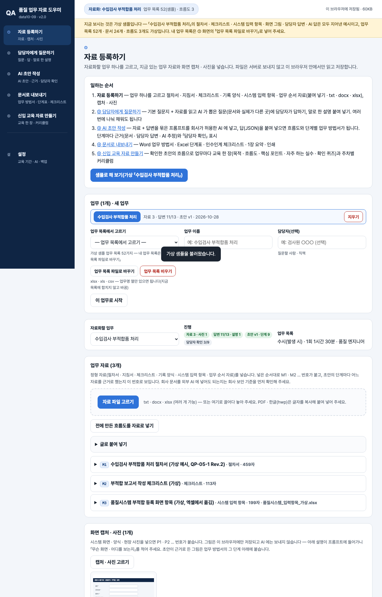

기획서 내려받기
파이프라인 · 아키텍처 · 와이어프레임 · 개발일지가 들어간 워드 문서입니다. 버전마다 따로 남깁니다.
| 버전 | 날짜 | 바뀐 점 | 파일 |
|---|---|---|---|
| v2.0 | 2026-11-10 | 최종 기획서 — 파이프라인 · 아키텍처 · 와이어프레임 정리 / 로그인 · 사용 신청 · 관리자 승인(요청자 Supabase 로 옮길 수 있게) / 로그인 전 대문 — 시안대로 크림색 · 남색 · 붉은 머리말과 문구 / 메뉴 정리 — 「기존 도구」 4개 삭제, 6개 이름 변경(품질 업무 자료 도우미 · 자료 등록하기 · 담당자에게 질문하기 · AI 초안 작성 · 문서로 내보내기 · 신입 교육 자료 만들기) / 신입 교육을 흐름 뒤 ⑤ 로 — ④ 에서 「⑤ 신입 교육 자료로 보내기」, ⑤ 에서 난이도 · 교육에 넣기 | 워드 내려받기 |
요구사항과 구현
| 기획서 요구 | 구현 |
|---|---|
| 기존 업무자료 · 양식 · 업무 순서 자료를 AI 도구에 입력 | 붙여 넣기 · txt(UTF-8/EUC-KR) · docx(문단 · 표) · xlsx(시트마다), 화면 캡처 · 사진. PDF · 한글은 글자를 복사해 붙여 넣기 |
| 담당자 설명 · 경험(암묵지) 반영 | 기본 질문지 13개 + 자료를 읽고 AI 가 뽑은 질문, 질문마다 답 저장(여러 번에 나눠), 말로 한 설명 붙여 넣기, 질문지 인쇄 |
| 업무 프로세스 · 업무 방법 자료 초안 | 자료 + 답변을 묶은 프롬프트 → 회사가 허용한 AI → 답(JSON) 검사 → 흐름도 + 단계별 업무 방법서(반자동) |
| 믿을 수 있는 부분과 확인이 필요한 부분 구분 | 단계마다 근거 문서 · 담당자 · 둘 다 · AI 추정, 칸 단위 「AI 추정」, 담당자 확인 표시, 판(버전) 기록 |
| 숙지 · 공유 · 인수인계 활용 | Word 업무 방법서 · Excel 단계표(5시트) · 인수인계 체크리스트 · 1장 요약 · 흐름도 SVG/PNG |
| 신입사원 교육 자료(처음 제출) | ⑤ 신입 교육 자료 만들기 — 보낸 초안 흐름으로 교육 한 장(목적 · 흐름도 · 핵심 포인트 · 자주 하는 실수 · 퀴즈 3) · 주차별 커리큘럼 |
| 11-10 메뉴 정리 — 1단계 4개 삭제 · 6개 이름 변경 | 메뉴를 ①~⑤ + 설정으로 정리, 화면 제목 · 안내문 · 단추 문구까지 새 이름으로(저장된 자료는 그대로) |
| 11-10 대문 디자인 시안 | 로그인 전 대문을 크림색 바탕 · 남색 제목 · 붉은 머리말로, 문구는 시안 그대로. 오른쪽 예시 카드(원소재 AUDIT)는 2단계 |
| 실제 시범 업무 1개로 한 바퀴 | 2단계 — 실제 업무 · 자료 견본 · 담당자 답변을 받으면 진행(지금은 가상 샘플) |
그림으로 보기






개발일지
2026-11-10 · 최종 기획서 · 로그인 · 메뉴 정리 · 대문
- 패들릿 요청대로 「기존 도구 (1단계)」 4개를 메뉴에서 빼고 6개 이름을 바꿈 — 메뉴 · 화면 제목 · 안내문 · 단추 · 문서 제목까지
- 뺀 화면이 만들던 자료(업무 목록 · 교육 대상 선택 · 흐름도)는 신입 교육이 쓰므로, ④ 에서 초안 흐름을 보내면 업무 목록에 잇고 커리큘럼에 넣도록 바꿈. ⑤ 에 난이도 · 교육에 넣기/빼기
- 설정은 신입 교육 기간 · AI 연결 · 백업만 보이게(뺀 화면의 기준값은 저장된 채 둠)
- 로그인 · 사용 신청 · 관리자 승인 키트, 로그인 전 대문을 시안 색 · 문구로
- 최종 기획서(plan.json → 워드 · plan.html), 시험 60개 · 브라우저 점검 통과
2026-10-28 · 업무 목록 바꾸기 · 비우기(수강생 요청)
- 52개 샘플 대신 내 업무 파일 목록으로 바꾸기, 업무명 한 열만 필수
- 화면 안 확인 창으로 지워지는 것 · 남는 것 보이기, 업무 자료화는 그대로
2026-10-28 · 방향 수정 반영
- 업무 · 자료 넣기 → 담당자 인터뷰 → 초안(AI) → 내보내기 화면 4개 새로
- 근거 판정 · AI 답 검사 · 판 기록 · 담당자 확인, 사진은 IndexedDB
- 1단계 화면은 「기존 도구」 메뉴로 옮겨 재료로 씀
2026-10-20 · 기획서 정리 · 1단계
- 업무 목록 가져오기 · 핵심 업무 점수 · 문서 맵 · 직책별 흐름도 · 신입 교육 한 장
- 가상 샘플(업무 52 · 문서 24 · 흐름도 3)로 검사 32개